All in One View
Content from A Brief Introduction to Machine Learning
Last updated on 2026-05-21 | Edit this page
Estimated time: 20 minutes
Overview
Questions
- What is machine learning?
- What specific tools will this lesson cover?
Objectives
- Give a brief definition of machine learning.
- Distinguish between classification and regression models.
- Describe the specific methods that this lesson will focus on.
What is Machine Learning?
Broadly speaking, machine learning encompasses a range of techniques and algorithms for gaining insights from large data sets. In this lesson, we will focus on supervised learning for tabular data.
Tabular data takes the form of a data frame. The methods we consider can apply to a variety of data frames, from large to very large (e.g., up to 1,000’s of columns/variables and 100,000’s of rows/observations, or more).
Supervised learning methods build models that predict output values of a function, given some example input and output values. In our context, the output of this function will typically have the form of one of the columns of our data frame, while the input has the form of the remaining columns.
Given a data frame, we will build machine learning models as follows.
Divide the data set into a training set and a testing set. Typically the training set will contain about 60% to 80% of the rows, while the testing set comprises the remaining rows. This train/test split is selected randomly.
Train the model on the training set. Part of this process may involve tuning: tweaking various model settings (i.e., hyperparameters) for optimal performance.
Test the performance of the model using the testing set. Since the testing set was not used in the training of the model, the testing performance will be a good indication of how well our model will perform on future (unknown) input values.
Once our model is built, we can use it to predict output values from new cases of input, and we can also examine the structure of the model to infer the nature of the relationship between the input and the output.
Example: Kyphosis Data Set
To illustrate the above definitions, consider the
kyphosis data set, which is included in the
rpart package.
R
library(rpart)
str(kyphosis)
OUTPUT
'data.frame': 81 obs. of 4 variables:
$ Kyphosis: Factor w/ 2 levels "absent","present": 1 1 2 1 1 1 1 1 1 2 ...
$ Age : int 71 158 128 2 1 1 61 37 113 59 ...
$ Number : int 3 3 4 5 4 2 2 3 2 6 ...
$ Start : int 5 14 5 1 15 16 17 16 16 12 ...For a description of this data set, you can view the help menu for
kyphosis.
R
?kyphosis
For example, in a later episode we will build a model that will predict whether a post-op kyphosis will be present (the output), given the age of the patient, the number of vertebrae involved, and the number of the first vertebra operated on (the input). We will train our model on a selection of rows of this data frame (e.g., about 60 randomly selected rows) and then test it on the remaining rows.
Let’s spend a few minutes exploring this data set.
R
summary(kyphosis)
Notice that only 17 of the 81 cases in our data set indicate the presence of a kyphosis. Try making a scatterplot of two of the quantitative variables.
R
library(tidyverse)
ggplot(kyphosis, aes(x = Number, y = Start)) +
geom_point()
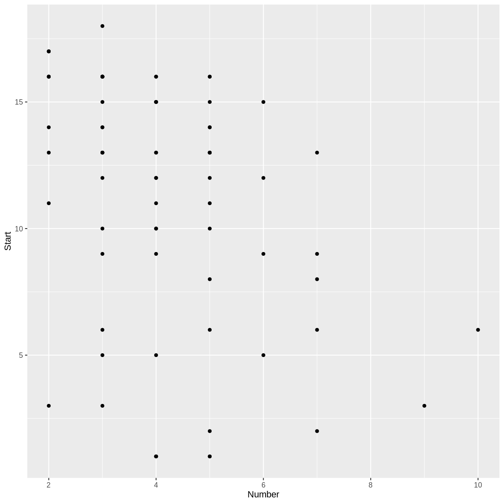
Challenge: Number and Start
Do you notice a trend in the scatterplot of Start
vs. Number? In the context of the kyphosis
data, why would there be such a trend?
There appears to be a weak, negative association between
Number and Start: larger values of
Number correspond to smaller values of Start.
This correspondence makes sense, because if more vertebrae are involved,
the topmost vertebra would have to be higher up. (The vertebrae are
numbered starting from the top.)
Classification vs. Regression
In the jargon of machine learning, a model that predicts a categorical output variable is called a classification model, while one that predicts a quantitative (numeric) output is called a regression model. Note: this terminology conflicts slightly with the common use of the term “regression” in statistics.
Our Focus
This lesson will focus on three machine learning methods that apply to both classification and regression problems.
- Decision Trees
- Random Forests
- Gradient Boosted Trees
We will also briefly explore classical linear and logistic regression, which we can view as simple examples of supervised learning. We will not dwell on the mathematical theory or algorithmic details of these methods. Interested learners are encouraged to consult An Introduction to Statistical Learning, by James, Witten, Hastie, and Tibshirani.
One of the main goals of this lesson is to help learners develop
their R coding skills, especially for the purpose of using the available
machine learning packages on the Comprehensive R Archive Network (CRAN).
We will focus on the packages randomForest and
xgboost, but many other packages are described in the CRAN Machine
Learning Task View.
- There are many types of machine learning.
- We will focus on some methods that work well with tabular data.
Content from Linear and Logistic Regression
Last updated on 2026-05-21 | Edit this page
Estimated time: 50 minutes
Overview
Questions
- How can a model make predictions?
- How do we measure the performance of predictions?
Objectives
- Define a linear regression model
- Define a logistic regression model
- Split data into training and testing sets.
Kyphosis Data
Make sure the rpart package is loaded, and examine the
structure of the kyphosis data frame.
R
library(rpart)
str(kyphosis)
OUTPUT
'data.frame': 81 obs. of 4 variables:
$ Kyphosis: Factor w/ 2 levels "absent","present": 1 1 2 1 1 1 1 1 1 2 ...
$ Age : int 71 158 128 2 1 1 61 37 113 59 ...
$ Number : int 3 3 4 5 4 2 2 3 2 6 ...
$ Start : int 5 14 5 1 15 16 17 16 16 12 ...Notice that there are 81 observations of four variables, so this is a rather small data set for machine learning techniques. In this episode, we will use this data set to illustrate the process of training and testing, where our models will be built using classical linear and logistic regression.
Make a training set and a test set
The first step in the process is to create a random train/test split of our data set. We will use the training set to build our model, without looking at the testing set. After our model is built, we will measure the accuracy of its predictions using the testing set.
There are various R packages that automate common tasks in machine learning, but it is instructive to use base R for now. The following commands will randomly select the row indexes of the training set (and therefore also of the testing set).
R
trainSize <- round(0.75 * nrow(kyphosis))
set.seed(6789) # so we all get the same random sets
trainIndex <- sample(nrow(kyphosis), trainSize)
Take a look at the trainIndex variable in the
Environment tab of RStudio. Since we set a particular value for the
random seed, we should all see the same sample of random numbers.
Next we form two data frames using these indexes. Recall that the
selection of -trainIndex will select all rows whose indexes
are not in the trainIndex vector.
R
trainDF <- kyphosis[trainIndex, ]
testDF <- kyphosis[-trainIndex, ]
We can View the train and test sets in RStudio to check
that they form a random partition of the kyphosis data.
R
View(trainDF)
View(testDF)
Linear Regression as Supervised Learning
In the previous episode, we constructed a scatterplot of
Number versus Start and observed a slight
negative association. A model of this relationship is given by the least squares
regression line, which we can consider as a simple example of
supervised learning. To compute the slope and y-intercept of this line,
we use the lm function in R.
In the following code block, the formula Start ~ Number
specifies that Number is the explanatory (independent)
variable, and Start is the response (dependent) variable. A
helpful mnemonic is to read the ~ symbol as “as explained
by.” To illustrate the process of supervised learning, we fit this
regression line to the training set trainDF, saving the
testing set for later.
R
model1 <- lm(Start ~ Number, data = trainDF)
summary(model1)
OUTPUT
Call:
lm(formula = Start ~ Number, data = trainDF)
Residuals:
Min 1Q Median 3Q Max
-11.018 -1.610 1.615 3.186 5.798
Coefficients:
Estimate Std. Error t value Pr(>|t|)
(Intercept) 16.4268 1.6393 10.021 2.38e-14 ***
Number -1.2041 0.3721 -3.236 0.00199 **
---
Signif. codes: 0 '***' 0.001 '**' 0.01 '*' 0.05 '.' 0.1 ' ' 1
Residual standard error: 4.698 on 59 degrees of freedom
Multiple R-squared: 0.1507, Adjusted R-squared: 0.1364
F-statistic: 10.47 on 1 and 59 DF, p-value: 0.001988The predicted Start is obtained by multiplying
Number by the regression slope
r round(model1$coefficients[2], 4) and adding the intercept
r round(model1$coefficients[1], 4).
Challenge: Make a prediction and plot the regression line
- Predict the starting vertebra when the number of vertebrae involved is 3.
- Adding the term
geom_smooth(method = "lm")to a scatterplot will produce a plot of the regression line. Modify theggplotcode from the previous episode to create a scatterplot of the training data, along with a regression line.
Three times -1.2041 plus 16.4268 is approximately 12.81.
R
library(ggplot2) # don't need this line if tidyverse is already loaded
ggplot(trainDF, aes(x = Number, y = Start)) +
geom_point() +
geom_smooth(method = "lm")
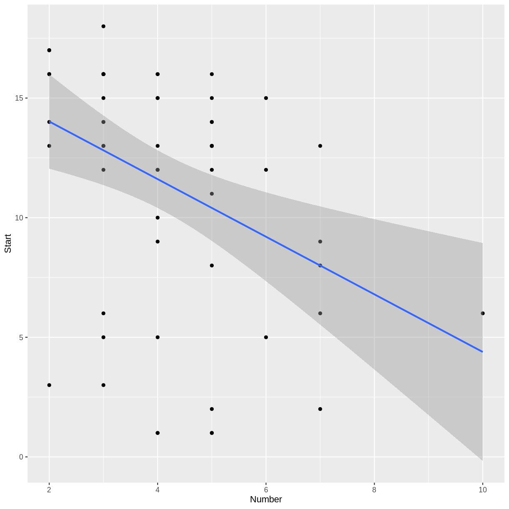
Try the Testing Data Set
In R there is a generic method called predict that will
make predictions given models of various types. For example, we can
compute the predicted starting vertebrae for all the cases in our
testing set as follows.
R
predictedStart <- predict(model1, testDF)
Challenge: Check our prediction
Check that the result of the predict function agrees
with the result of the previous challenge
R
head(predictedStart)
OUTPUT
12 21 32 36 37 38
12.81438 14.01851 14.01851 12.81438 12.81438 10.40611 R
head(testDF)
OUTPUT
Kyphosis Age Number Start
12 absent 148 3 16
21 absent 22 2 16
32 absent 125 2 11
36 absent 93 3 16
37 absent 1 3 9
38 present 52 5 6Notice that the first row of our testing set has a
Number value of 3, and the first value of
predictedStart agrees with our answer to the previous
challenge.
In general, the value of Start predicted by the model
will not equal the actual value of Start in the testing
set. However, in a good model, we would hope that the predicted values
will be close to the actual values. To assess how close our predictions
are to reality, we compute a vector of errors: predicted values minus
actual values.
R
actualStart <- testDF$Start
errors <- predictedStart - actualStart
cat(round(errors, 1))
OUTPUT
-3.2 -2 3 -3.2 3.8 4.4 0.2 2.6 10.6 2.8 -3.4 0.4 -3 -0.2 -0.2 1.6 -1.4 0.6 -5.6 -3.4Measuring the Prediction Error
There are several ways to summarize the overall error in a regression model. The mean of the errors is not a good choice, because errors will usually have positive and negative values, which will cancel when averaged. To avoid this cancellation effect, we can take the mean of the squares of the errors: the Mean Squared Error, or MSE.
R
mean(errors^2)
OUTPUT
[1] 13.14172For a measurement of overall error in the same units as the output variable, we take the square root of the MSE to obtain the Root Mean Squared Error, or RMSE.
R
sqrt(mean(errors^2))
OUTPUT
[1] 3.625151Challenge: Mean Absolute Error
The Mean Absolute Error (MAE) is the average of the absolute values of the errors. Compute the MAE for the above example.
R
mean(abs(errors))
OUTPUT
[1] 2.77752In upcoming episodes, we will compare different regression models using the RMSE of the prediction error on the testing set.
Logistic Regression
In the previous episode, we observed that in the context of the
kyphosis data, it would be natural to try to predict whether a post-op
kyphosis will be present, given the age of the patient, the number of
vertebrae involved, and the number of the first vertebra operated on. In
this situation, Kyphosis is our categorical response
variable, and Age, Number, and
Start are the explanatory variables. You can see the
levels of the Kyphosis variable with the following
command.
R
levels(kyphosis$Kyphosis)
OUTPUT
[1] "absent" "present"Since our response variable is categorical, we need to employ a
classification model. The following command will fit a Multiple Logistic
Regression model to our training data using the glm
command.
R
model2 <- glm(Kyphosis ~ Age + Number + Start, data = trainDF, family = "binomial")
Notice that we specified the formula
Kyphosis ~ Age + Number + Start, because
Kyphosis is the response variable and Age,
Number, and Start are the explanatory
variables. Since Age, Number, and
Start make up all the remaining columns in our data frame,
we could have used the equivalent formula Kyphosis ~ ., as
follows.
R
model2 <- glm(Kyphosis ~ ., data = trainDF, family = "binomial")
The formula Kyphosis ~ . can be read as
“Kyphosis as explained by everything else.”
The predict function for binomial glm
models will return predicted probabilities of the response variable if
we specify the option type = "response".
R
predict(model2, testDF, type = "response")
OUTPUT
12 21 32 36 37 38
0.060991556 0.004837329 0.066676823 0.027771160 0.034862103 0.389677526
39 43 44 46 47 51
0.287882930 0.988363673 0.531083119 0.183999574 0.122064478 0.244337950
52 57 60 66 68 69
0.003170923 0.014410381 0.061131542 0.069057143 0.236889844 0.056456800
70 76
0.035581184 0.206575349 If we actually want to know whether or not the model predicts that a
kyphosis is present, we need to convert these probabilities to the
appropriate levels of the Kyphosis variable. The first
level, absent, corresponds to probabilities near zero, and
the second level, present, corresponds to probabilities
near one. So we can create a vector of the predicted
Kyphosis values of our testing set as follows.
R
predictedKyphosis <- ifelse(predict(model2, testDF, type = "response") < 0.5,
"absent", "present")
predictedKyphosis
OUTPUT
12 21 32 36 37 38 39 43
"absent" "absent" "absent" "absent" "absent" "absent" "absent" "present"
44 46 47 51 52 57 60 66
"present" "absent" "absent" "absent" "absent" "absent" "absent" "absent"
68 69 70 76
"absent" "absent" "absent" "absent" The actual occurrences of kyphosis in our testing set are given by
the vector testDF$Kyphosis, so the following command will
tell us which predictions were correct.
R
testDF$Kyphosis == predictedKyphosis
OUTPUT
12 21 32 36 37 38 39 43 44 46 47 51 52
TRUE TRUE TRUE TRUE TRUE FALSE TRUE FALSE FALSE FALSE TRUE TRUE TRUE
57 60 66 68 69 70 76
TRUE TRUE TRUE TRUE TRUE TRUE TRUE One way to measure the performance of a classification model is to
report the proportion of correct predictions, known as the
accuracy of the model. Recall that the sum
function, when applied to a logical vector, will return the number of
TRUEs in the vector.
R
accuracy <- sum(testDF$Kyphosis == predictedKyphosis)/nrow(testDF)
cat("Proportion of correct predictions using testing data: ", accuracy, "\n")
cat("Testing data error rate: ", 1-accuracy, "\n")
OUTPUT
Proportion of correct predictions using testing data: 0.8
Testing data error rate: 0.2 Challenge: Try different train/test splits
Before we constructed the models in this episode, we divided the data
into a training set and a testing set. Try experimenting with different
train/test splits to see if it has any effect on the model accuracy.
Specifically, re-do the construction of model2, the
logistic regression model, with the following modifications.
Try a different value of the random seed. Does the prediction accuracy change?
We originally chose a training set size that was 75% of the size of the
kyphosisdata frame. Experiment with different percentages for the train/test split. Does changing the size of the training set affect the accuracy of the model?
Let’s define a function to avoid repeating code.
R
testAccuracy <- function(splitPercent, randomSeed) {
tSize <- round(splitPercent * nrow(kyphosis))
set.seed(randomSeed)
tIndex <- sample(nrow(kyphosis), tSize)
trnDF <- kyphosis[tIndex, ]
tstDF <- kyphosis[-tIndex, ]
kmod <- glm(Kyphosis ~ ., data = trnDF, family = "binomial")
predK <- ifelse(predict(kmod, tstDF, type = "response") < 0.5, "absent", "present")
return(sum(tstDF$Kyphosis == predK)/nrow(tstDF))
}
Try different seeds:
R
testAccuracy(0.75, 6789) # our original settings
OUTPUT
[1] 0.8R
testAccuracy(0.75, 1234)
OUTPUT
[1] 0.9So the choice of seed makes a difference.
Try different split percentages:
R
testAccuracy(0.9, 6789)
OUTPUT
[1] 0.75R
testAccuracy(0.5, 6789)
OUTPUT
[1] 0.7804878- Classical linear and logistic regression models can be thought of as examples of regression and classification models in machine learning.
- Testing sets can be used to measure the performance of a model.
Content from Decision Trees
Last updated on 2026-05-29 | Edit this page
Estimated time: 55 minutes
Overview
Questions
- What are decision trees?
- How can we use a decision tree model to make a prediction?
- What are some shortcomings of decision tree models?
Objectives
- Introduce decision trees and recursive partitioning.
- Revisit the Kyphosis example using a classification tree.
- Illustrate the use of training and testing sets.
Decision Trees
Let’s simulate a data set of exam scores, along with letter grades.
R
library(tidyverse)
set.seed(456)
exam <- tibble(score = sample(80:100, 200, replace = TRUE)) %>%
mutate(grade = as_factor(ifelse(score < 90, "B", "A")))
head(exam)
summary(exam)
Given only this data frame, can we recover the grading scale that was
used to assign the letter grades? In other words, can we
partition this data set into A’s and B’s, based on the exam
score? The rpart command can form this partition for us,
using the formula syntax we saw in the last episode.
R
library(rpart)
library(rpart.plot)
examTree <- rpart(grade ~ score, data = exam)
rpart.plot(examTree)
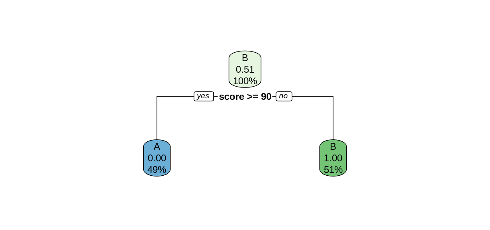
The rpart function searches for the best way to split
the data set into predicted values of the response variables, based on
the explanatory variables. This Introduction
to Rpart has details on how the split is chosen. In this simple
case, the rpart function was able to perfectly partition
the data after only one split. We can tell rpart.plot to
report the number of correctly-classified cases in each node by
including the option extra = 2.
R
rpart.plot(examTree, extra = 2)
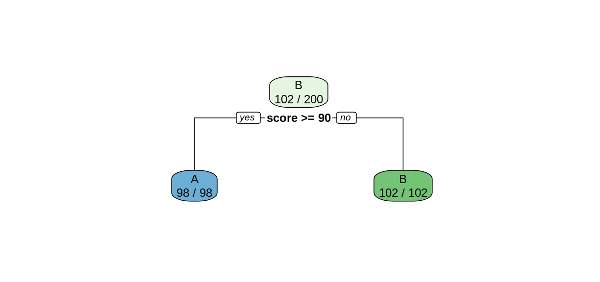
Notice that in the top node, every case was classified as a B, so only the Bs were correctly classified. After the split, both child nodes were classified perfectly.
In more complex situations, the algorithm will continue to create further splits to improve its classification. This process is called recursive partitioning.
Challenge: Use rpart on the
kyphosis data
Use the rpart function to create a decision tree using
the kyphosis data set. As in the previous episode, the
response variable is Kyphosis, and the explanatory varables
are the remaining columns Age, Number, and
Start.
- Use
rpart.plotto plot your tree model. - Use this tree to predict the value of
KyphosiswhenStartis 12,Ageis 59, andNumberis 6. - How many of the 81 cases in the data set does this tree classify incorrectly?
R
ktree <- rpart(Kyphosis ~ ., data = kyphosis)
rpart.plot(ktree, extra = 2)
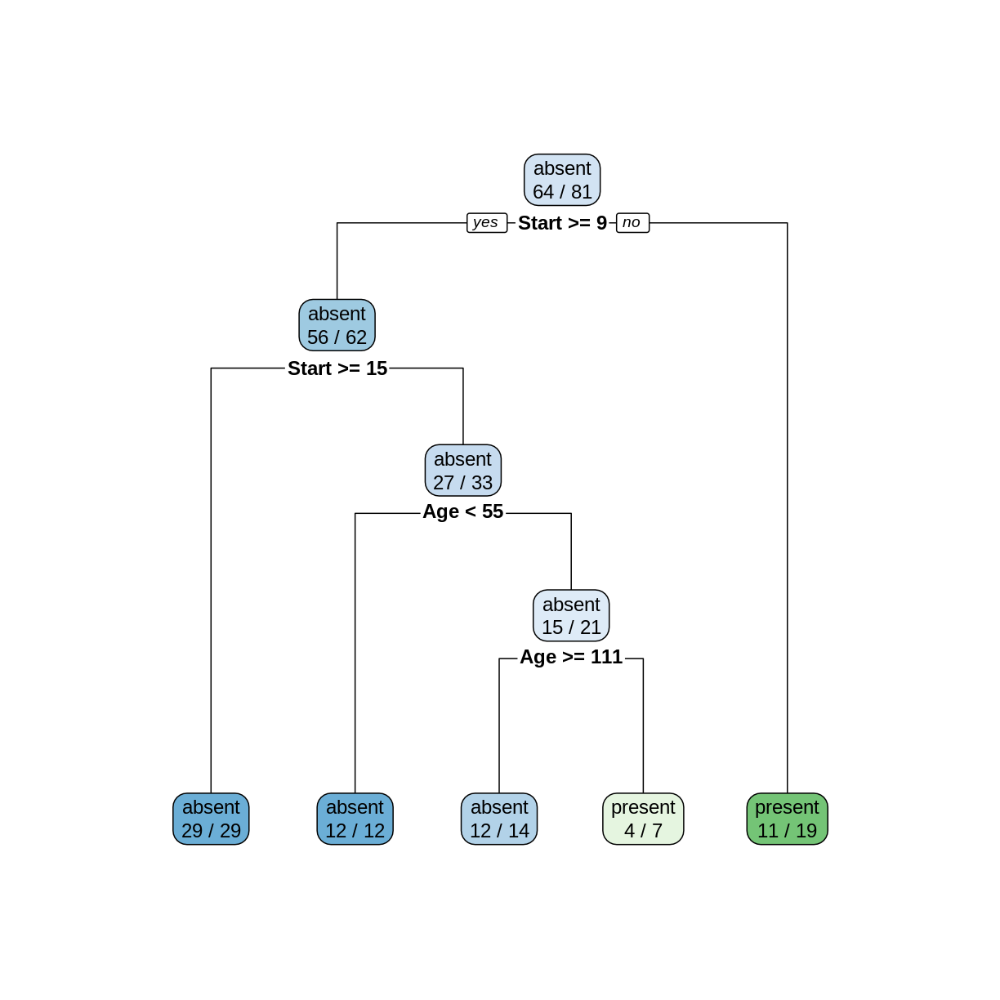
To make a prediction using this tree, start at the top node. Since
Start is 12, and 12 >= 9, we follow the left (yes) edge.
Since Start is not >= 15, we then follow the right (no)
edge. Since Age is 59 and 59 is not < 55, we follow the
right edge. Finally, since Age is not >= 111 we follow
the right edge to the leaf and obtain the prediction
present.
In the two leftmost leaves, all of the cases are classified correctly. However, in the three remaining leaves, there are 2, 3, and 8 incorrectly classified cases, for a total of 13 misclassifications.
Using Decision Trees for Supervised Learning
In order to compare the decision tree model to the logistic
regression model in the previous episode, let’s train the model on the
training set and test it on the testing set. The following commands will
form our training and testing set using the slice function,
which is part of the tidyverse.
R
trainSize <- round(0.75 * nrow(kyphosis))
set.seed(6789) # same seed as in the last episode
trainIndex <- sample(nrow(kyphosis), trainSize)
trainDF <- kyphosis %>% slice(trainIndex)
testDF <- kyphosis %>% slice(-trainIndex)
Now train the decision tree model on the training set
R
treeModel <- rpart(Kyphosis ~ Age + Number + Start, data = trainDF)
rpart.plot(treeModel, extra = 2)
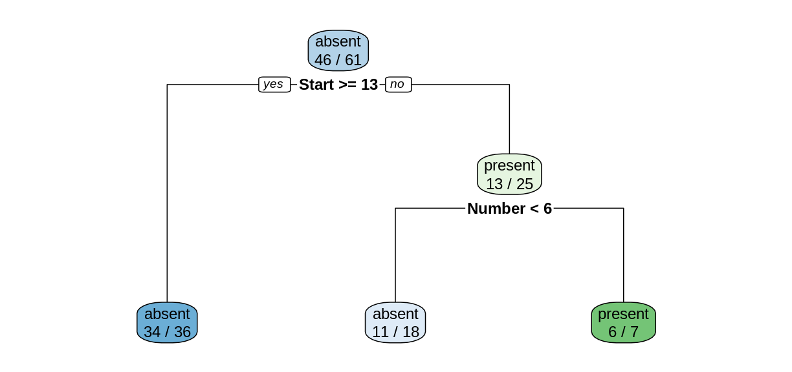
Notice that we obtain a simpler tree using the training set instead of the full data set.
Challenge: Training set accuracy
What proportion of cases in the training set were classified correctly?
Reading the leaves from left to right, there were 34, 11, and 6 correctly-classified cases:
R
(34+11+6)/nrow(trainDF)
OUTPUT
[1] 0.8360656Model predictions on the testing set
The predict function works on rpart models
similarly to how it works on lm and glm
models, but the output is a matrix of predicted probabilities.
R
predict(treeModel, testDF)
OUTPUT
absent present
1 0.9444444 0.05555556
2 0.9444444 0.05555556
3 0.6111111 0.38888889
4 0.9444444 0.05555556
5 0.6111111 0.38888889
6 0.6111111 0.38888889
7 0.1428571 0.85714286
8 0.1428571 0.85714286
9 0.6111111 0.38888889
10 0.6111111 0.38888889
11 0.9444444 0.05555556
12 0.6111111 0.38888889
13 0.9444444 0.05555556
14 0.9444444 0.05555556
15 0.9444444 0.05555556
16 0.6111111 0.38888889
17 0.9444444 0.05555556
18 0.6111111 0.38888889
19 0.9444444 0.05555556
20 0.9444444 0.05555556To investigate the behavior of this model, we bind the columns of the
predicted probabilities to the testing set data frame to create a new
data frame called predDF.
R
predMatrix <- predict(treeModel, testDF)
predDF <- testDF %>%
bind_cols(predMatrix)
Challenge: Predicted probabilities
Compare the results in the predDF data frame with the
plot of treeModel. Can you explain how the model is
calculating the predicted probabilites?
Consider the first row of predDF.
R
predDF[1,]
OUTPUT
Kyphosis Age Number Start absent present
1 absent 148 3 16 0.9444444 0.05555556Since the value of Start is greater than 13, we follow
the “yes” branch of the decision tree and land at the leftmost leaf,
labeled “absent”, with a probability of 34/36, which is approximately
0.9444. Similarly, consider row 8.
R
predDF[8,]
OUTPUT
Kyphosis Age Number Start absent present
8 absent 143 9 3 0.1428571 0.8571429Since the value of Start is less than 13, we follow the
“no” branch. Then since the value of Number is greater than
6, we follow the right branch to land on the leaf labeled “present”,
with a probability of 6/7, which is 0.8571.
Testing set accuracy
Let’s add a new column called Prediction to the
predDF data frame that gives the model prediction
(absent or present) for each row, based on the
probability in the absent column of
predDF.
R
predDF <- predDF %>%
mutate(Prediction = ifelse(predDF$absent > 0.5, "absent", "present"))
Recall that in supervised learning, we use the testing set
to measure how our model performs on data it was not trained on. Since
this model is a classification model, we compute accuracy
as the proportion of correct predictions.
R
accuracy <- sum(predDF$Kyphosis == predDF$Prediction)/nrow(predDF)
cat("Proportion of correct predictions: ", accuracy, "\n")
In general, the accuracy on the testing set will be less than the accuracy on the training set.
Challenge: Change the training set
Repeat the construction of the decision tree model for the
kyphosis data, but experiment with different values of the
random seed to obtain different testing and training sets. Does the
shape of the tree change? Does the testing set accuracy change?
R
set.seed(314159) # try a different seed
trainIndex <- sample(nrow(kyphosis), trainSize) # use the same size training set
trainDF <- kyphosis %>% slice(trainIndex)
testDF <- kyphosis %>% slice(-trainIndex)
treeModel <- rpart(Kyphosis ~ Age + Number + Start, data = trainDF)
rpart.plot(treeModel, extra = 2)
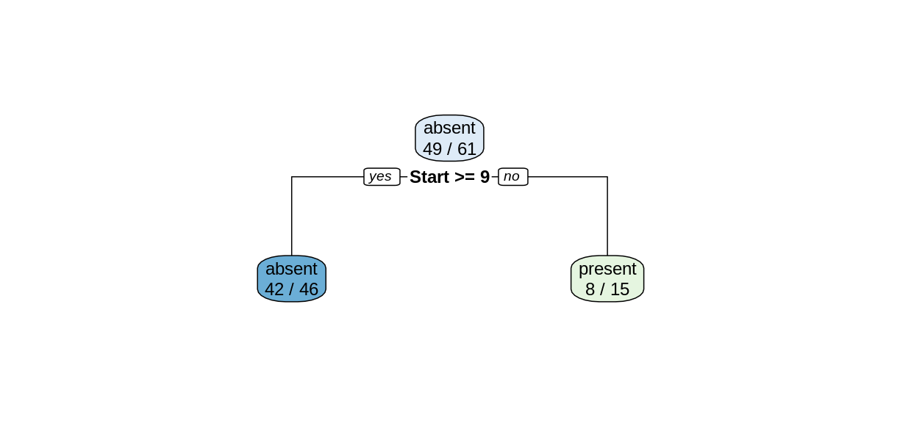
Changing the seed for the train/test split resulted in a different decision tree.
R
predMatrix <- predict(treeModel, testDF)
predictedKyphosis <- ifelse(predMatrix[,1] > 0.5, "absent", "present")
accuracy <- sum(testDF$Kyphosis == predictedKyphosis)/nrow(testDF)
cat("Proportion of correct predictions: ", accuracy, "\n")
OUTPUT
Proportion of correct predictions: 0.85 The testing set accuracy also changed.
Robustness, or lack thereof
In this episode we have seen that the structure of the decision tree can vary quite a bit when we make small changes to the training data. Training the model on the whole data set resulted in a very different tree than what we obtained by training on a slightly smaller testing set. And changing the choice of testing set, even while maintaining its size, also altered the tree structure. When the structure of a model changes significantly for a small change in the training data, we say that the model is not robust. Non-robustness can be a problem, because one or two unusual observations can make a big difference in the conclusions we draw.
Since their predictions can vary wildly depending on the randomly selected training set, decision trees are called weak learners. In the upcoming episodes, we will explore two methods that use ensembles of weak learners to create a models with more predictive strength.
- Training data can give us a decision tree model.
- Decision trees can be used for supervised learning, but they are not very robust.
Content from Random Forests
Last updated on 2026-05-29 | Edit this page
Estimated time: 90 minutes
Overview
Questions
- What are random forests?
- How do random forests improve decision tree models?
Objectives
- Introduce random forests.
- Use random forests for classification and regression models.
- Evaluate the quality of a random forest model.
We saw in the previous episode that decision tree models can be sensitive to small changes in the training data. Random Forests mitigate this issue by forming an ensemble (i.e., set) of decision trees, and using them all together to make a prediction.
Wine Dataset
For this episode, we will use a data set described in the article
Modeling wine preferences by data mining from physicochemical
properties, in Decision Support Systems, 47(4):547-553, by P.
Cortez, A. Cerdeira, F. Almeida, T. Matos and J. Reis. (Instructions for
downloading this data set are in the setup
page.) The data set contains quality ratings and measurements from
6497 samples of wine; rows 1:1599 are red wine samples, and
rows 1600:6497 are white wine.
R
library(tidyverse)
library(here)
wine <- read_csv(here("data", "wine.csv"))
R
glimpse(wine)
ggplot(wine, aes(x = quality)) + geom_histogram(binwidth = 1)
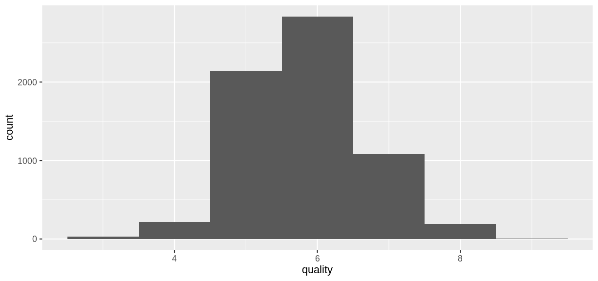
The goal of the models that follow will be to predict the
quality rating of a wine sample from its chemical
properties.
Red Wine Classification Model
To illustrate classification models with this data set, let’s create
a categorical variable grade that will serve as a response
variable.
R
redwineClass <- wine |>
slice(1:1599) |> # just the red wine samples
mutate(grade = as_factor(if_else(quality < 5.5, "bad", "good"))) |>
select(-quality) # get rid of the quality variable
summary(redwineClass$grade)
OUTPUT
bad good
744 855 Create Training and Test Sets
Create training and test sets using an 80/20 split.
R
trainSize <- round(0.80 * nrow(redwineClass))
set.seed(1234)
trainIndex <- sample(nrow(redwineClass), trainSize)
trainDF <- redwineClass |> slice(trainIndex)
testDF <- redwineClass |> slice(-trainIndex)
Challenge: Create a decision tree model
Use the rpart function to create a decision tree model
for predicting the grade variable from the remaining
columns in the redwineClass data frame. Use the training
and testing sets defined above. Compute the testing set accuracy.
R
library(rpart)
library(rpart.plot)
rwtree <- rpart(grade ~ ., data = trainDF)
rpart.plot(rwtree)
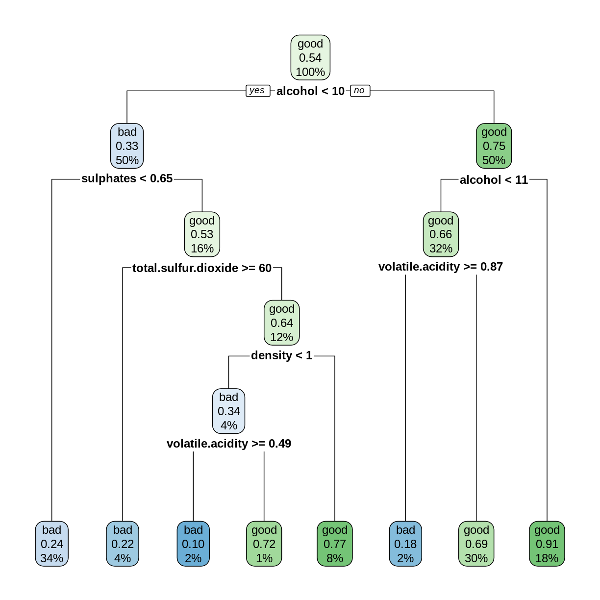
R
rwp <- predict(rwtree, testDF)
rwpred <- ifelse(rwp[,1] > 0.5, "bad", "good")
sum(testDF$grade == rwpred)/nrow(testDF)
OUTPUT
[1] 0.696875The decision tree model can correctly predict the grade about 70% of the time.
Random Forest Classification Model
A random forest model combines several decision tree models as follows.
- Several different decision trees are built, each from a random bootstrap sample of the same size as the original data. This process is also known as bagging (bootstrap aggregation).
- For each tree model, a randomly-chosen subset of variables is chosen to determine each split.
- Each decision tree model makes a prediction, and the category with the most “votes” is selected as the prediction of the random forest.
More details can be found in Breiman’s 2002 paper, pages 8-9.
The randomForest package is an R implementation of
Breiman and Cutler’s original Fortran code. The syntax for building a
model is similar to lm, glm, and
rpart. Because of the randomness used in the algorithm, it
is good practice to set the random seed so that the results will be
reproducible.
R
library(randomForest)
set.seed(4567)
redwineForest <- randomForest(grade ~ ., data = trainDF)
The predict function works on random forests. Observe
that it returns a vector of levels of the grade
variable.
R
rwpred2 <- predict(redwineForest, testDF)
head(rwpred2)
OUTPUT
1 2 3 4 5 6
bad bad bad bad bad bad
Levels: bad goodChallenge: Accuracy of the Random Forest Model
Compute the testing set accuracy of the random forest model above. Compare this accuracy with the decision tree model in the previous challenge.
R
sum(testDF$grade == rwpred2)/nrow(testDF)
OUTPUT
[1] 0.821875The random forest model can correctly predict the grade about 82% of the time, which is an improvement of about 12 percentage points over the decision tree model.
Out-of-bag Error
Since each tree in the random forest is built on a bootstrap sample
of the rows in the training set, some rows will be left out of each
sample. Each tree can then make a prediction on each row that was
excluded, i.e., “out of the bag” (OOB). Each row will be excluded by
several trees, which form a subforest that produces an aggregate
prediction for each row. The out-of-bag estimate of the error
rate is the error rate of these predictions. The OOB error rate gives a
convenient estimate of the error rate of the model (error = 1 -
accuracy). The print function reports the OOB error.
R
print(redwineForest)
OUTPUT
Call:
randomForest(formula = grade ~ ., data = trainDF)
Type of random forest: classification
Number of trees: 500
No. of variables tried at each split: 3
OOB estimate of error rate: 19.16%
Confusion matrix:
bad good class.error
bad 470 119 0.2020374
good 126 564 0.1826087The confusion matrix gives further details on how the OOB error was calculated: Out of 470+119 bad wines, 119 were classified as good, and out of 126+564 good wines, 126 were classified as bad. Check that (119+126)/(470+119+126+564) = 0.1916.
Train on the whole data set
Given that OOB error gives us a good way to estimate model accuracy, we can train random forest models on the entire data set, without using a train/test split (Breiman, 2001, p. 8).
R
set.seed(4567)
rwforFull <- randomForest(grade ~ ., data = redwineClass)
print(rwforFull)
OUTPUT
Call:
randomForest(formula = grade ~ ., data = redwineClass)
Type of random forest: classification
Number of trees: 500
No. of variables tried at each split: 3
OOB estimate of error rate: 16.82%
Confusion matrix:
bad good class.error
bad 615 129 0.1733871
good 140 715 0.1637427Caveat: If you plan to “tune” your model by adjusting the
optional parameters in randomForest, it is still good
practice to set aside a testing set for assessing model accuracy after
the model has been tuned using only the training data. A train/test
split is also helpful if you want to compare random forest models with
other types of models.
Variable Importance
The out-of-bag errors can also be used to assess the importance of
each explanatory variable in contributing to the accuracy of the model.
If we set importance = TRUE in a call to
randomForest, the function will keep track of how much the
OOB accuracy decreases when each variable is randomly permuted.
Scrambling a variable in this way effectively removes its predictive
power from the model, so we would expect the most important variables to
have the greatest decreases in accuracy.
R
set.seed(2345)
rwforFull <- randomForest(grade ~ ., data = redwineClass, importance = TRUE)
importance(rwforFull, type = 1)
OUTPUT
MeanDecreaseAccuracy
fixed.acidity 33.60865
volatile.acidity 50.37700
citric.acid 30.12944
residual.sugar 31.40780
chlorides 34.39463
free.sulfur.dioxide 32.60753
total.sulfur.dioxide 50.95265
density 42.35901
pH 36.46366
sulphates 58.41187
alcohol 75.06260Challenge: Most and Least Important
Based on the Mean Decrease in Accuracy, Which two variables are the most important, and which two are the least important? Are these results consistent with the decision tree model you constructed in the first challence of this episode?
For convenience, let’s sort the rows of the importance matrix.
R
importance(rwforFull, type = 1) |>
as_tibble(rownames = "Variable") |>
arrange(desc(MeanDecreaseAccuracy))
OUTPUT
# A tibble: 11 × 2
Variable MeanDecreaseAccuracy
<chr> <dbl>
1 alcohol 75.1
2 sulphates 58.4
3 total.sulfur.dioxide 51.0
4 volatile.acidity 50.4
5 density 42.4
6 pH 36.5
7 chlorides 34.4
8 fixed.acidity 33.6
9 free.sulfur.dioxide 32.6
10 residual.sugar 31.4
11 citric.acid 30.1The top two variables are alcohol and
sulphates, which both occur near the root of the decision
tree. The least important variables are residual.sugar and
citric.acid, which do not occur in the decision tree. So it
seems consistent that the important variables play important roles in
the decision tree, while the unimportant variables do not.
Red Wine Regression Model
So far, we have applied decision trees and random forests to classification problems, where the dependent variable is categorical. These techniques also apply to regression problems, where we are predicting a quantitative variable.
Recall that in the original wine data set, there is a
variable called quality that assigns each sample a
numerical quality score. For the examples that follow, we will treat
quality as a quantitative variable. As before, we select
the rows that contain observations of red wines, and we form training
and testing sets.
R
redwine <- wine |> slice(1:1599)
trainSize <- round(0.80 * nrow(redwine))
set.seed(1234)
trainIndex <- sample(nrow(redwine), trainSize)
trainDF <- redwine |> slice(trainIndex)
testDF <- redwine |> slice(-trainIndex)
Fit a Decision Tree
When the dependent variable is quantitative, we use the
method = "anova" option in rpart to construct
a decision tree. In this situation, the predicted value corresponding to
each node is the mean value of the observations assigned to the node,
and the algorithm searches for a split that minimizes the sum of the
squared errors of these predictions.
R
rwtree <- rpart(quality ~ ., data = trainDF, method = "anova")
rpart.plot(rwtree)
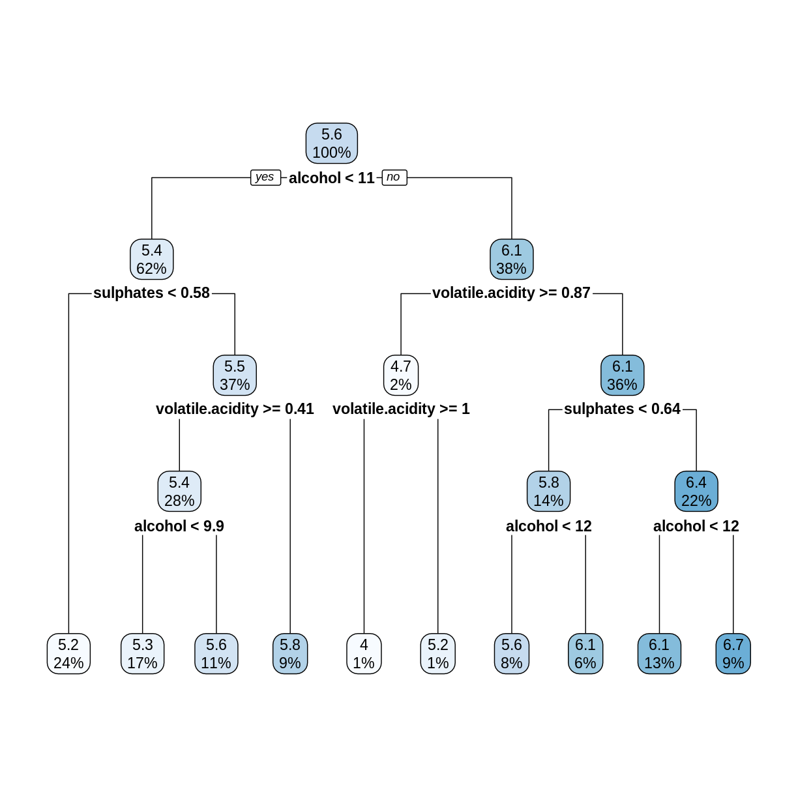
The rpart.plot command rounds off numerical values to
save space. To see more digits of accuracy, print the tree in text
format.
R
rwtree
OUTPUT
n= 1279
node), split, n, deviance, yval
* denotes terminal node
1) root 1279 827.94210 5.636435
2) alcohol< 10.525 787 332.33800 5.364676
4) sulphates< 0.575 310 100.56770 5.154839 *
5) sulphates>=0.575 477 209.24950 5.501048
10) volatile.acidity>=0.405 364 149.63460 5.403846
20) alcohol< 9.85 223 66.76233 5.278027 *
21) alcohol>=9.85 141 73.75887 5.602837 *
11) volatile.acidity< 0.405 113 45.09735 5.814159 *
3) alcohol>=10.525 492 344.51020 6.071138
6) volatile.acidity>=0.8725 26 23.11538 4.730769
12) volatile.acidity>=1.015 10 6.00000 4.000000 *
13) volatile.acidity< 1.015 16 8.43750 5.187500 *
7) volatile.acidity< 0.8725 466 272.07730 6.145923
14) sulphates< 0.635 184 95.77717 5.831522
28) alcohol< 11.65 102 53.84314 5.627451 *
29) alcohol>=11.65 82 32.40244 6.085366 *
15) sulphates>=0.635 282 146.24470 6.351064
30) alcohol< 11.55 166 79.81325 6.138554 *
31) alcohol>=11.55 116 48.20690 6.655172 *For example, the first split tests whether
alcohol < 10.525, not 11 as shown in the plot of the
tree.
Challenge: Check the Splits
In the above decision tree, consider the root (5.6), its left child
(5.4), and the leftmost leaf (5.2). Check that these numbers are in fact
the average quality values (rounded to one decimal place)
of the observations in trainDF that are assigned to each
node.
The root node contains all the observations, so compute its mean
quality value.
R
mean(trainDF$quality)
OUTPUT
[1] 5.636435The left child of the root contains observations where
alcohol is less than 10.525.
R
trainDF |>
filter(alcohol < 10.525) |>
summarize(nodeValue = mean(quality))
OUTPUT
# A tibble: 1 × 1
nodeValue
<dbl>
1 5.36The leftmost leaf contains observations where alcohol is
less than 10.525 and sulphates is less than 0.575.
R
trainDF |>
filter(alcohol < 10.525, sulphates < 0.575) |>
summarize(nodeValue = mean(quality))
OUTPUT
# A tibble: 1 × 1
nodeValue
<dbl>
1 5.15Decision Tree RMSE
For regression trees, each leaf is assigned a predicted value, and
the predict function selects the appropriate
leaf/prediction based on the values of the explanatory variables.
R
predictedQuality <- predict(rwtree, testDF)
head(predictedQuality)
OUTPUT
1 2 3 4 5 6
5.154839 5.278027 5.278027 5.154839 5.154839 5.602837 Since this is a regression model, we assess its performance using the root mean squared error (RMSE).
R
errors <- predictedQuality - testDF$quality
decTreeRMSE <- sqrt(mean(errors^2))
decTreeRMSE
OUTPUT
[1] 0.6862169Random Forest Regression Model
Constructing a random forest regression model uses
randomForest with the same syntax as we used for
classification models. The only difference is that the response variable
quality in our formula is a quantitative variable. The
predicted values given by predict are the average
predictions of all the trees in the forest.
R
set.seed(4567)
rwfor <- randomForest(quality ~ ., data = trainDF)
predQualRF <- predict(rwfor, testDF)
rfErrors <- predQualRF - testDF$quality
rfRMSE <- sqrt(mean(rfErrors^2))
rfRMSE
OUTPUT
[1] 0.5913485The random forest RMSE is better (smaller) than the decision tree RMSE.
R
print(rwfor)
OUTPUT
Call:
randomForest(formula = quality ~ ., data = trainDF)
Type of random forest: regression
Number of trees: 500
No. of variables tried at each split: 3
Mean of squared residuals: 0.3269279
% Var explained: 49.5The Mean of squared residuals is the MSE of the
out-of-bag errors. The % Var explained term is a “pseudo
R-squared”, computed as 1 - MSE/Var(y). The OOB MSE should be close to
the MSE on the testing set. So again, you don’t always need a train/test
split when working with random forests.
We conclude this episode with a series of challenges.
Challenge: Variable Importance
As with classification models, setting importance = TRUE
in a call to randomForest will use the OOB errors to
measure variable importance. In the regression case, the decrease in
performance when a variable is permuted is measured by the percentage
increase in MSE (%IncMSE). The larger the
%IncMSE, the more important the variable.
Compute the %IncMSE variable importance for the red wine
regression model, and sort the variables by their importance. Re-train
the model on the entire redwine data set instead of on the
testing set. Are the most important variables the same as in the
classification model?
The syntax is almost identical to the classification case. Since the
identifier %IncMSE contains special characters, it must be
enclosed in backticks.
R
set.seed(2345)
rwFull <- randomForest(quality ~ ., data = redwine, importance = TRUE)
importance(rwFull, type = 1) |>
as_tibble(rownames = "Variable") |>
arrange(desc(`%IncMSE`))
OUTPUT
# A tibble: 11 × 2
Variable `%IncMSE`
<chr> <dbl>
1 alcohol 59.2
2 sulphates 55.6
3 volatile.acidity 39.7
4 total.sulfur.dioxide 38.3
5 density 34.5
6 chlorides 32.7
7 free.sulfur.dioxide 30.0
8 citric.acid 28.9
9 fixed.acidity 28.4
10 pH 25.1
11 residual.sugar 24.2The top five most important variables are the same as in the
classification model, but their order is slightly different. The
variable pH seems to be relatively more important in the
classification model.
Challenge: Linear Regression Model
In Episode 2, we used the lm function to fit a linear
model to the training set, and then we computed the RMSE on the testing
set. Repeat this process for the redwine data set. How does
the linear regression RMSE compare to the random forest RMSE? Compare
the summary of your linear model with the variable
importance rankings from the previous challenge.
R
redwine.lm <- lm(quality ~ ., data = trainDF)
lmRMSE <- sqrt(mean((predict(redwine.lm, testDF) - testDF$quality)^2))
lmRMSE
OUTPUT
[1] 0.6880957The random forest RMSE is less than the linear model RMSE.
R
summary(redwine.lm)
OUTPUT
Call:
lm(formula = quality ~ ., data = trainDF)
Residuals:
Min 1Q Median 3Q Max
-2.68737 -0.36035 -0.03507 0.43456 1.95898
Coefficients:
Estimate Std. Error t value Pr(>|t|)
(Intercept) 9.3242378 23.4596015 0.397 0.6911
fixed.acidity 0.0108114 0.0284758 0.380 0.7043
volatile.acidity -1.2144573 0.1320387 -9.198 < 2e-16 ***
citric.acid -0.2957551 0.1608745 -1.838 0.0662 .
residual.sugar 0.0193480 0.0168430 1.149 0.2509
chlorides -1.8858347 0.4583915 -4.114 4.14e-05 ***
free.sulfur.dioxide 0.0054883 0.0023783 2.308 0.0212 *
total.sulfur.dioxide -0.0034664 0.0007974 -4.347 1.49e-05 ***
density -5.0636470 23.9244350 -0.212 0.8324
pH -0.4331191 0.2065623 -2.097 0.0362 *
sulphates 0.9244109 0.1306583 7.075 2.47e-12 ***
alcohol 0.2886439 0.0293633 9.830 < 2e-16 ***
---
Signif. codes: 0 '***' 0.001 '**' 0.01 '*' 0.05 '.' 0.1 ' ' 1
Residual standard error: 0.6385 on 1267 degrees of freedom
Multiple R-squared: 0.3762, Adjusted R-squared: 0.3708
F-statistic: 69.46 on 11 and 1267 DF, p-value: < 2.2e-16The variables the smallest p-values (Pr(>|t|)) tend
to correspond to the most important variables in the random forest
model.
Challenge: White Wine
Rows 1600-6497 of the wine data frame correspond to
white wine observations. Use these rows to train and test a random
forest model, as we did with the red wine observations. Compute a
testing set RMSE, and assess variable importance. Are the important
variables for predicting white wine quality the same as the important
variables for predicting red wine quality?
R
whitewine <- wine |> slice(1600:6497)
trainSize <- round(0.80 * nrow(whitewine))
set.seed(1234)
trainIndex <- sample(nrow(whitewine), trainSize)
trainDF <- whitewine |> dplyr::slice(trainIndex)
testDF <- whitewine |> dplyr::slice(-trainIndex)
wwfor <- randomForest(quality ~ ., data = trainDF)
predQualww <- predict(wwfor, testDF)
errors <- predQualww - testDF$quality
wwRMSE <- sqrt(mean(errors^2))
The RMSE on the white wine testing set is about 0.63.
R
set.seed(4567)
wwforFull <- randomForest(quality ~ ., data = whitewine, importance = TRUE)
importance(wwforFull, type = 1) |>
as_tibble(rownames = "Variable") |>
arrange(desc(`%IncMSE`))
Relative to red wine, free.sulfur.dioxide is much more
important for predicting white wine quality, and sulphates
is less important.
- Random forests can make predictions of a categorical or quantitative variable.
- Random forests, with their default settings, work reasonably well.
Content from Gradient Boosted Trees
Last updated on 2026-06-05 | Edit this page
Estimated time: 70 minutes
Overview
Questions
- What is gradient boosting?
- How can we train an XGBoost model?
- What is the learning rate?
Objectives
- Introduce XGBoost models.
- Train regression models using XGBoost
- Explore the effect of learning rate on the training process.
Gradient Boosted Trees
A random forest is called an ensemble method, because it combines the results of a set of trees to form a single prediction. Gradient boosted trees are also ensemble methods, but instead of forming a forest of trees from different random samples, they grow successive trees that systematically reduce the error of the model at each iteration.
We will be using the R package xgboost, which gives a
fast, scalable implementation of a gradient boosting framework. For more
information on how xgboost works, see the XGBoost
Presentation vignette and the Introduction
to Boosted Trees tutorial in the XGBoost documentation. In this
episode we will use XGBoost to create a regression model, but this
framework can also be used for classification problems.
Reload the Red Wine Data
R
library(tidyverse)
library(here)
R
library(xgboost)
Notice that both xgboost and dplyr have a
function called slice. In the following code block, we
specify that we want to use the dplyr version.
R
wine <- read_csv(here("data", "wine.csv"))
redwine <- wine |> dplyr::slice(1:1599)
trainSize <- round(0.80 * nrow(redwine))
set.seed(1234)
trainIndex <- sample(nrow(redwine), trainSize)
trainDF <- redwine |> dplyr::slice(trainIndex)
testDF <- redwine |> dplyr::slice(-trainIndex)
The xgboost package defines a data structure called
xgb.DMatrix that optimizes storage and retrieval. To use
the advanced features of xgboost, it is necessary to
convert our training and test sets to the xgb.DMatrix
class.
R
dtrain <- xgb.DMatrix(data = as.matrix(select(trainDF, -quality)), label = trainDF$quality)
dtest <- xgb.DMatrix(data = as.matrix(select(testDF, -quality)), label = testDF$quality)
Training an XGBoost Model
Since we specified a label in our dtrain
and dtest matrices, there is no need to specify a formula
when training a model using xgb.train. The label that we
specified (quality rating) will be the response variable, and the
columns of the data that we specified will be the
explanatory variables. One option that we must specify is
nrounds, which restricts the number of boosting iterations
the algorithm will make.
R
redwineXGB <- xgb.train(data = dtrain, nrounds = 10)
Let’s calculate the RMSE on our testing set. The predict
function for XGBoost models expects a matrix, so we pass it the
xgb.DMatrix that we created from our testing set.
R
pQuality <- predict(redwineXGB, dtest)
errors <- pQuality - testDF$quality
sqrt(mean(errors^2)) #RMSE
OUTPUT
[1] 0.6561705More Details on the Training Process
The xgb.train command will automatically calculate the
RMSE on our testing set after each iteration if we set the testing set
in the watchlist.
R
redwineXGB <- xgb.train(data = dtrain, watchlist = list(test = dtest), nrounds = 10)
OUTPUT
[1] test-rmse:0.739547
[2] test-rmse:0.697529
[3] test-rmse:0.677260
[4] test-rmse:0.666461
[5] test-rmse:0.663789
[6] test-rmse:0.661025
[7] test-rmse:0.656802
[8] test-rmse:0.657357
[9] test-rmse:0.656321
[10] test-rmse:0.656171 The training history is saved as a data frame in the attribute
evaluation_log, so we can plot how the RMSE changes during
the training process.
R
attr(redwineXGB, "evaluation_log") |>
ggplot(aes(x = iter, y = test_rmse)) +
geom_line()
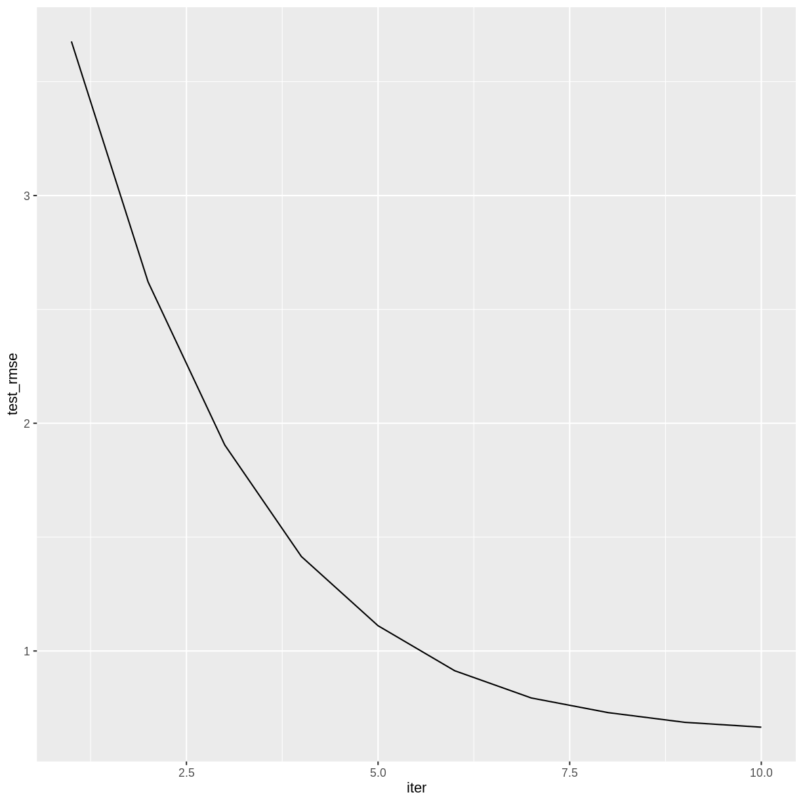
Challenge: How many boosting iterations?
Experiment with different values of nrounds in the above
call to xgb.train. Does the accuracy of the model improve
with more iterations? Is there a point after which the model ceases to
improve?
The accuracy of the model doesn’t appear to improve after iteration 14.
R
redwineXGB <- xgb.train(data = dtrain,
watchlist = list(test = dtest),
nrounds = 20)
OUTPUT
[1] test-rmse:0.739547
[2] test-rmse:0.697529
[3] test-rmse:0.677260
[4] test-rmse:0.666461
[5] test-rmse:0.663789
[6] test-rmse:0.661025
[7] test-rmse:0.656802
[8] test-rmse:0.657357
[9] test-rmse:0.656321
[10] test-rmse:0.656171
[11] test-rmse:0.654021
[12] test-rmse:0.651006
[13] test-rmse:0.650065
[14] test-rmse:0.650734
[15] test-rmse:0.650865
[16] test-rmse:0.651042
[17] test-rmse:0.650033
[18] test-rmse:0.649995
[19] test-rmse:0.649126
[20] test-rmse:0.647756 R
attr(redwineXGB, "evaluation_log") |>
ggplot(aes(x = iter, y = test_rmse)) +
geom_line()
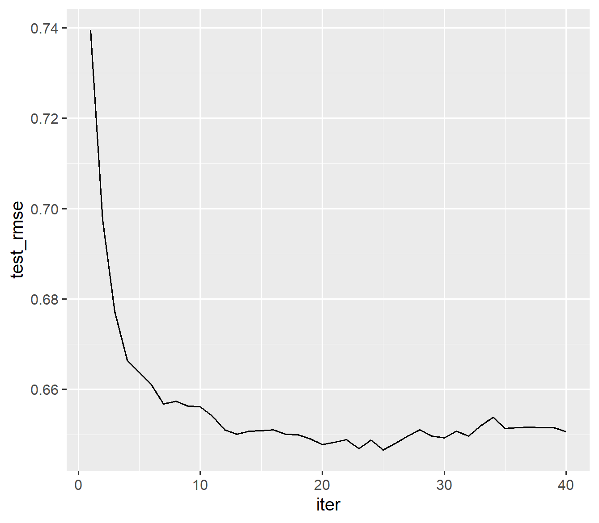
Learning Rate
Machine learning algorithms that reduce a loss function over a sequence of iterations typically have a setting that controls the learning rate. A smaller learning rate will generally reduce the error by a smaller amount at each iteration, and therefore will require more iterations to arrive at a given level of accuracy. The advantage to a smaller learning rate is that the algorithm is less likely to overshoot the optimum fit.
In XGBoost, the setting that controls the learning rate is called
eta, which is one of several hyperparameters that
can be adjusted. Its default value is 0.3, but smaller values will
usually perform better. It must take a value in the range 0 <
eta < 1.
The following code will set eta to its default value. We
include a value for early_stopping_rounds, which will halt
the training after a specified number of iterations pass without
improvement. When using early_stopping_rounds,
nrounds can be set to a very large number. To avoid
printing too many lines of output, we also set a value for
print_every_n.
R
redwineXGB <- xgb.train(data = dtrain,
params = list(eta = 0.3),
evals = list(test = dtest),
nrounds = 1000,
early_stopping_rounds = 10,
print_every_n = 5)
OUTPUT
Will train until test_rmse hasn't improved in 10 rounds.
[1] test-rmse:0.739547
[6] test-rmse:0.661025
[11] test-rmse:0.654021
[16] test-rmse:0.651042
[21] test-rmse:0.648309
[26] test-rmse:0.648100
[31] test-rmse:0.650731
Stopping. Best iteration:
[35] test-rmse:0.651400
[35] test-rmse:0.651400 The 35th iteration had the smallest RMSE.
Challenge: Experiment with the learning rate.
Experiment with different values of eta in the above
call to xgb.train. Notice how smaller values of eta require
more iterations. Can you find a value of eta that results
in a lower testing set RMSE than the default?
A learning rate around 0.1 reduces the RMSE somewhat.
R
redwineXGB <- xgb.train(data = dtrain,
params = list(eta = 0.1),
evals = list(test = dtest),
nrounds = 1000,
early_stopping_rounds = 10,
print_every_n = 15)
OUTPUT
Will train until test_rmse hasn't improved in 10 rounds.
[1] test-rmse:0.789059
[16] test-rmse:0.643070
[31] test-rmse:0.629120
[46] test-rmse:0.625930
Stopping. Best iteration:
[48] test-rmse:0.625455
[48] test-rmse:0.625455 Variable Importance
As with random forests, you can view the predictive importance of each explanatory variable.
R
xgb.importance(model = redwineXGB)
OUTPUT
Feature Gain Cover Frequency
<char> <num> <num> <num>
1: alcohol 0.30854145 0.20533266 0.08665431
2: volatile.acidity 0.14497002 0.12210243 0.10889713
3: sulphates 0.12760406 0.13532236 0.08711770
4: total.sulfur.dioxide 0.08528885 0.10227935 0.09360519
5: fixed.acidity 0.06277324 0.06687905 0.14365153
6: chlorides 0.05994638 0.08001722 0.09592215
7: density 0.04635801 0.06776201 0.07599629
8: residual.sugar 0.04470028 0.06218626 0.09267841
9: citric.acid 0.04053801 0.06268225 0.08109361
10: pH 0.04017616 0.05639794 0.06672845
11: free.sulfur.dioxide 0.03910355 0.03903844 0.06765524The rows are sorted by Gain, which measures the accuracy
improvement contributed by a feature based on all the splits it
determines. Note that the sum of all the gains is 1.
Training Error vs. Testing Error
Like many machine learning algorithms, gradient boosting operates by minimizing the error on the training set. However, we evaluate its performance by computing the error on the testing set. These two errors are usually different, and it is not uncommon to have much lower training RMSE than testing RMSE.
To see both training and testing errors, we can add a
train item to the watchlist.
R
redwineXGB <- xgb.train(data = dtrain,
params = list(eta = 0.1),
evals = list(train = dtrain, test = dtest),
nrounds = 1000,
early_stopping_rounds = 10,
print_every_n = 15)
OUTPUT
Multiple eval metrics are present. Will use test_rmse for early stopping.
Will train until test_rmse hasn't improved in 10 rounds.
[1] train-rmse:0.763413 test-rmse:0.789059
[16] train-rmse:0.467861 test-rmse:0.643070
[31] train-rmse:0.366838 test-rmse:0.629120
[46] train-rmse:0.314553 test-rmse:0.625930
Stopping. Best iteration:
[48] train-rmse:0.311647 test-rmse:0.625455
[48] train-rmse:0.311647 test-rmse:0.625455 R
attr(redwineXGB, "evaluation_log") |>
pivot_longer(cols = c(train_rmse, test_rmse), names_to = "RMSE") |>
ggplot(aes(x = iter, y = value, color = RMSE)) +
geom_line()
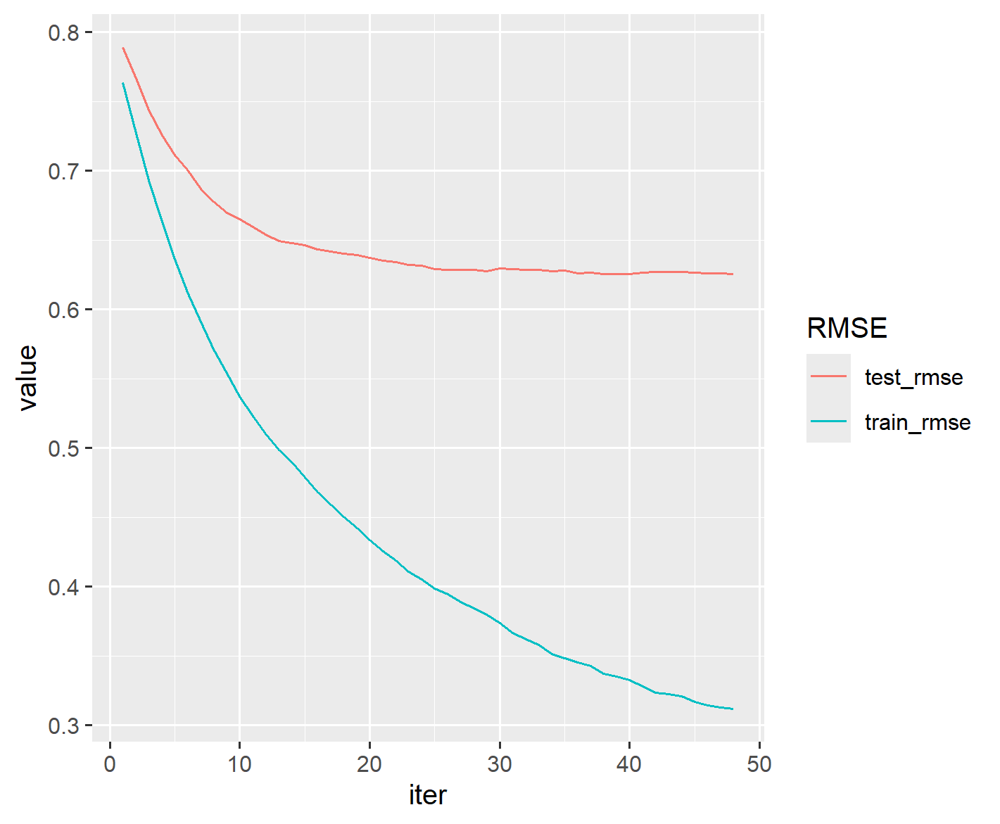
Notice that beyond iteration 20 or so, the training RMSE continues to decrease while the testing RMSE has basically stabilized. This divergence indicates that the later training iterations are improving the model based on the particularities of the training set, but in a way that does not generalize to the testing set.
Saving a trained model
As models become more complicated, the time it takes to train them
becomes nontrivial. For this reason, it can be helpful to save a trained
XGBoost model. We’ll create a directory in our project called
saved_models and save our XGBoost model in a universal
binary format that can be read by any XGBoost interface (e.g., R,
Python, Julia, Scala).
R
dir.create(here("saved_models"))
xgb.save(redwineXGB, here("saved_models", "redwine.model"))
This trained model can be loaded into a future R session with the
xgb.load command.
R
reloaded_model <- xgb.load(here("saved_models", "redwine.model"))
However, while reloaded_model can be used with the
predict function, it is not identical to the
redwineXGB object. For reproducibility, it is important to
save the source code used in the training process.
Challenge: White Wine
Build an XGBoost model for the white wine data (rows 1600-6497) of
the wine data frame. Compare the RMSE and variable
importance with the random forest white wine model from the previous
episode.
R
whitewine <- wine |> dplyr::slice(1600:6497)
trainSize <- round(0.80 * nrow(whitewine))
set.seed(1234)
trainIndex <- sample(nrow(whitewine), trainSize)
trainDF <- whitewine |> dplyr::slice(trainIndex)
testDF <- whitewine |> dplyr::slice(-trainIndex)
dtrain <- xgb.DMatrix(data = as.matrix(select(trainDF, -quality)),
label = trainDF$quality)
dtest <- xgb.DMatrix(data = as.matrix(select(testDF, -quality)),
label = testDF$quality)
whitewineXGB <- xgb.train(data = dtrain,
params = list(eta = 0.1),
evals = list(train = dtrain, test = dtest),
nrounds = 1000,
early_stopping_rounds = 10,
print_every_n = 20)
xgb.importance(model = whitewineXGB)
attr(whitewineXGB, "evaluation_log") |>
pivot_longer(cols = c(train_rmse, test_rmse), names_to = "RMSE") |>
ggplot(aes(x = iter, y = value, color = RMSE)) +
geom_line()
The testing set RMSE (0.656833) is worse than what we obtained in the random forest model (0.63). The important explanatory variables are similar.
So far, our XGBoost models have performed slightly worse than the equivalent random forest models. In the next episode we will explore ways to improve these results.
- Gradient boosted trees can be used for the same types of problems that random forests can solve.
- The learning rate can affect the performance of a machine learning algorithm.
Content from Cross Validation and Tuning
Last updated on 2026-06-15 | Edit this page
Estimated time: 75 minutes
Overview
Questions
- How can the fit of an XGBoost model be improved?
- What is cross validation?
- What are some guidelines for tuning parameters in a machine learning algorithm?
Objectives
- Explore the effects of adjusting the XGBoost parameters.
- Practice some coding techniques to tune parameters using grid searching and cross validation.
Parameter Tuning
Like many other machine learning algorithms, XGBoost has an assortment of parameters that control the behavior of the training process. (These parameters are sometimes referred to as hyperparameters, because they cannot be directly estimated from the data.) To improve the fit of the model, we can adjust, or tune, these parameters. According to the notes on parameter tuning in the XGBoost documentation, “[p]arameter tuning is a dark art in machine learning,” so it is difficult to prescribe an automated process for doing so. In this episode we will develop some coding practices for tuning an XGBoost model, but be advised that the optimal way to tune a model will depend heavily on the given data set.
You can find a complete list of XGBoost parameters in the documentation. Generally speaking, each parameter controls the complexity of the model in some way. More complex models tend to fit the training data more closely, but such models can be very sensitive to small changes in the training set. On the other hand, while less complex models can be more conservative in this respect, they have a harder time modeling intricate relationships. The “art” of parameter tuning lies in finding an appropriately complex model for the problem at hand.
A complete discussion of the issues involved are beyond the scope of this lesson. An excellent resource on the topic is An Introduction to Statistical Learning, by James, Witten, Hastie, and Tibshirani. In particular, Section 2.2.2 discusses the Bias-Variance Trade-Off inherent in statistical learning methods.
Cross Validation
How will we be able to tell if an adjustment to a parameter has improved the model? One possible approach would be to test the model before and after the adjustment on the testing set. However, the problem with this method is that it runs the risk of tuning the model to the particular properties of the testing set, rather than to general future cases that we might encounter. It is better practice to save our testing set until the very end of the process, and then use it to test the accuracy of our model. Training set accuracy, as we have seen, tends to underestimate the accuracy of a machine learning model, so tuning to the training set may also fail to make improvements that generalize.
An alternative testing procedure is to use cross validation on the training set to judge the effect of tuning adjustments. In k-fold cross validation, the training set is partitioned randomly into k subsets. Each of these subsets takes a turn as a testing set, while the model is trained on the remaining data. The accuracy of the model is then measured k times, and the results are averaged to obtain an estimate of the overall model performance. In this way we can be more certain that repeated adjustments will be tested in ways that generalize to future observations. It also allows us to save the original testing set for a final test of our tuned model.
Revisit the Red Wine Quality Model
Let’s see if we can improve the previous episode’s model for predicting red wine quality.
R
library(tidyverse)
library(here)
library(xgboost)
wine <- read_csv(here("data", "wine.csv"))
redwine <- wine |> dplyr::slice(1:1599)
trainSize <- round(0.80 * nrow(redwine))
set.seed(1234)
trainIndex <- sample(nrow(redwine), trainSize)
trainDF <- redwine |> dplyr::slice(trainIndex)
testDF <- redwine |> dplyr::slice(-trainIndex)
dtrain <- xgb.DMatrix(data = as.matrix(select(trainDF, -quality)), label = trainDF$quality)
dtest <- xgb.DMatrix(data = as.matrix(select(testDF, -quality)), label = testDF$quality)
The xgb.cv command handles most of the details of the
cross validation process. Since this is a random process, we will set a
seed value for reproducibility. We will use 10 folds and the default
value of 0.3 for eta.
R
set.seed(524)
rwCV <- xgb.cv(params = list(eta = 0.3),
data = dtrain,
nfold = 10,
nrounds = 500,
early_stopping_rounds = 10,
print_every_n = 5)
The output appears similar to the xgb.train command.
Notice that each error estimate now includes a standard deviation,
because these estimates are formed by averaging over all ten folds. The
function returns a list, which we have given the name rwCV.
Its names hint at what each list item represents.
R
names(rwCV)
Challenge: Examine the cross validation results
- Examine the list item
rwCV$folds. What do suppose these numbers represent? Are all the folds the same size? Can you explain why/why not? - Display the evaluation log with rows sorted by
test_rmse_mean. - How could you display only the row containing the best iteration?
The numbers are the indexes of the rows in each fold. The folds are not all the same size, because no row can be used more than once, and there are 1279 rows total in the training set, so they don’t divide evenly into 10 partitions.
R
rwCV$evaluation_log |>
arrange(test_rmse_mean)
R
rwCV$evaluation_log |>
arrange(test_rmse_mean) |>
head(1)
Repeat Cross Validation in a Loop
To expedite the tuning process, it helps to design a loop to run
repeated cross validations on different parameter values. We can start
by choosing a value of eta from a list of candidate
values.
R
paramDF <- tibble(eta = c(0.001, 0.01, 0.05, 0.1, 0.2, 0.3, 0.4))
The following command converts a data frame to a list of lists. The
split function splits paramDF into a list of
its rows, and then the lapply function converts each row to
a list. Each item of paramlist will be a list giving a
valid parameter setting that we can use in the xgb.cv
function.
R
paramList <- lapply(split(paramDF, 1:nrow(paramDF)), as.list)
Now we will write a loop that will perform a different cross
validation for each parameter setting in the paramList
list. We’ll keep track of the best iterations in the
bestResults tibble. To avoid too much printing, we set
verbose = FALSE and use a txtProgressBar to
keep track of our progress. On some systems, it may be necessary to use
gc() to prevent running out of memory.
R
bestResults <- tibble()
set.seed(708)
pb <- txtProgressBar(style = 3)
for(i in seq(length(paramList))) {
rwCV <- xgb.cv(params = paramList[[i]],
data = dtrain,
nrounds = 500,
nfold = 10,
early_stopping_rounds = 10,
verbose = FALSE)
bestResults <- bestResults |>
bind_rows(rwCV$evaluation_log |>
arrange(test_rmse_mean) |>
head(1))
gc() # Free unused memory after each loop iteration
setTxtProgressBar(pb, i/length(paramList))
}
close(pb) # done with the progress bar
We now have all of the best iterations in the
bestResults data frame, which we can combine with the data
frame of parameter values.
R
etasearch <- bind_cols(paramDF, bestResults)
In RStudio, it is convenient to use View(etasearch) to
view the results in a separate tab. We can use the RStudio interface to
sort by mean_test_rmse.
Note that there is not much difference in mean_test_rmse
among the best three choices. As we have seen in the previous episode,
the choice of eta typically involves a trade-off between
speed and accuracy. A common approach is to pick a reasonable value of
eta and then stick with it for the rest of the tuning
process. Let’s use eta = 0.1, because it uses about half as
many steps as eta = 0.05, and the accuracy is
comparable.
Grid Search
Sometimes it helps to tune a pair of related parameters together. A grid search runs through all possible combinations of candidate values for a selection of parameters.
We will tune the parameters max_depth and
max_leaves together. These both affect the size the trees
that the algorithm grows. Deeper trees with more leaves make the model
more complex. We use the expand.grid function to store some
reasonable candidate values in paramDF.
R
paramDF <- expand.grid(
max_depth = seq(15, 29, by = 2),
max_leaves = c(63, 127, 255, 511, 1023, 2047, 4095),
eta = 0.1)
If you View(paramDF) you can see that we have 56
different parameter choices to run through. The rest of the code is the
same as before, but this loop might take a while to execute.
R
paramList <- lapply(split(paramDF, 1:nrow(paramDF)), as.list)
bestResults <- tibble()
set.seed(312)
pb <- txtProgressBar(style = 3)
for(i in seq(length(paramList))) {
rwCV <- xgb.cv(params = paramList[[i]],
data = dtrain,
nrounds = 500,
nfold = 10,
early_stopping_rounds = 10,
verbose = FALSE)
bestResults <- bestResults |>
bind_rows(rwCV$evaluation_log |>
arrange(test_rmse_mean) |>
head(1))
gc()
setTxtProgressBar(pb, i/length(paramList))
}
close(pb)
depth_leaves <- bind_cols(paramDF, bestResults)
When we View(depth_leaves) we see that a choice of
max_depth = 19 and max_leaves = 63 results in
the best test_rmse_mean. One caveat is that cross
validation is a random process, so running this code with a different
random seed may very well produce a different result.
Challenge: Write a Grid Search Function
Instead of repeatedly using the above code block, let’s package it
into an R function. Define a function called GridSearch
that consumes a data frame paramDF of candidate parameter
values and an xgb.DMatrix dtrain of training
data. The function should return a data frame combining the columns of
paramDF with the corresponding results of the best cross
validation iteration. The returned data frame should be sorted in
ascending order of test_rmse_mean.
R
GridSearch <- function(paramDF, dtrain) {
paramList <- lapply(split(paramDF, 1:nrow(paramDF)), as.list)
bestResults <- tibble()
pb <- txtProgressBar(style = 3)
for(i in seq(length(paramList))) {
rwCV <- xgb.cv(params = paramList[[i]],
data = dtrain,
nrounds = 500,
nfold = 10,
early_stopping_rounds = 10,
verbose = FALSE)
bestResults <- bestResults |>
bind_rows(rwCV$evaluation_log |>
arrange(test_rmse_mean) |>
head(1))
gc()
setTxtProgressBar(pb, i/length(paramList))
}
close(pb)
return(bind_cols(paramDF, bestResults) |> arrange(test_rmse_mean))
}
Check the function on a small example.
R
set.seed(630)
GridSearch(tibble(eta = c(0.3, 0.2, 0.1)), dtrain)
Adding Random Sampling
Adding random sampling to the training process can help make the
model less dependent on the training set, and hopefully more accurate
when generalizing to future cases. In XGBoost, the two parameters
subsample and colsample_bytree will grow trees
based on a random sample of a specified percentage of rows and columns,
respectively. Typical values for these parameters are between 0.5 and
1.0 (where 1.0 implies that no random sampling will be done).
Challenge: Tune Row and Column Sampling
Use a grid search to tune the parameters subsample and
colsample_bytree. Choose candidate values between 0.5 and
1.0. Use our previously chosen values of eta,
max_depth, and max_leaves.
R
paramDF <- expand.grid(
subsample = seq(0.5, 1, by = 0.1),
colsample_bytree = seq(0.5, 1, by = 0.1),
max_depth = 19,
max_leaves = 63,
eta = 0.1)
set.seed(848)
randsubsets <- GridSearch(paramDF, dtrain)
It appears that some amount of randomization helps. It looks like
subsample = 0.8 and colsample_bytree = 0.9
results in the lowest test_rmse_mean.
Final Check using the Testing Set
Once a model has been tuned using the training set and cross validation, it can be tested using the testing set. Note that we have not used the testing set in any of our tuning experiments, so the testing set accuracy should give a fair assessment of the accuracy of our tuned model relative to the other models we have explored.
We give parameters max_depth, max_leaves,
subsample, and colsample_bytree the values
that we chose during the tuning process. Since we only have to do one
training run, a smaller learning rate won’t incur much of a time
penalty, so we set eta = 0.05.
R
set.seed(805)
rwMod <- xgb.train(
data = dtrain,
verbose = FALSE,
evals = list(train = dtrain, test = dtest),
nrounds = 10000,
early_stopping_rounds = 50,
params = list(
max_depth = 21,
max_leaves = 63,
subsample = 0.8,
colsample_bytree = 0.9,
eta = 0.05
)
)
print(rwMod)
attr(rwMod, "evaluation_log") |>
pivot_longer(cols = c(train_rmse, test_rmse), names_to = "RMSE") |>
ggplot(aes(x = iter, y = value, color = RMSE)) +
geom_line()
After some tuning, our testing set RMSE is down to 0.60, which is an improvement over the previous episode and over the RMSE we obtained using the random forest model.
Challenge: Improve the White Wine Model
Improve your XGBoost model for the white wine data (rows 1600-6497)
of the wine data frame. Use grid searches to tune several
parameters, using only the training set during the tuning process. Can
you improve the testing set RMSE over the white wine challenges from the
previous two episodes?
Results may vary. The proposed solution below will take quite some time to execute.
R
whitewine <- wine |> dplyr::slice(1600:6497)
trainSize <- round(0.80 * nrow(whitewine))
set.seed(1234)
trainIndex <- sample(nrow(whitewine), trainSize)
trainDF <- whitewine |> dplyr::slice(trainIndex)
testDF <- whitewine |> dplyr::slice(-trainIndex)
dtrain <- xgb.DMatrix(data = as.matrix(select(trainDF, -quality)),
label = trainDF$quality)
dtest <- xgb.DMatrix(data = as.matrix(select(testDF, -quality)),
label = testDF$quality)
Start by tuning max_depth and max_leaves
together.
R
paramGrid <- expand.grid(
max_depth = seq(10, 40, by = 2),
max_leaves = c(15, 31, 63, 127, 255, 511, 1023, 2047, 4095, 8191),
eta = 0.1
)
set.seed(1981)
ww_depth_leaves <- GridSearch(paramGrid, dtrain)
There are several options that perform similarly. Let’s choose
max_depth = 14 along with max_leaves = 127.
Now we tune the two random sampling parameters together.
R
paramGrid <- expand.grid(
subsample = seq(0.5, 1, by = 0.1),
colsample_bytree = seq(0.5, 1, by = 0.1),
max_depth = 14,
max_leaves = 127,
eta = 0.1
)
set.seed(867)
ww_randsubsets <- GridSearch(paramGrid, dtrain)
Again, some randomization seems to help, but there are several
options. We’ll choose subsample = 0.8 and
colsample_bytree = 0.9. Finally, we train the model with
the chosen parameters.
R
set.seed(5309)
ww_gbmod <- xgb.train(
data = dtrain,
verbose = FALSE,
evals = list(train = dtrain, test = dtest),
nrounds = 10000,
early_stopping_rounds = 50,
params = list(
max_depth = 14,
max_leaves = 127,
subsample = 0.8,
colsample_bytree = 0.9,
eta = 0.1
)
)
The tuned XGBoost model has a testing set RMSE of about 0.63, which is better than the un-tuned model from the last episode (0.66), and similar to the random forest model (0.63).
- Parameter tuning can improve the fit of an XGBoost model.
- Cross validation allows us to tune parameters using the training set only, saving the testing set for final model evaluation.